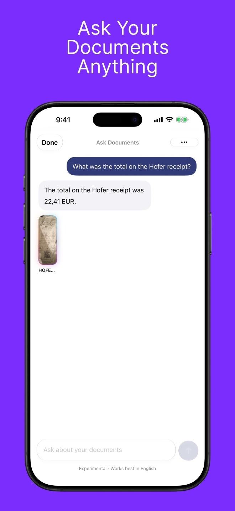

Auto Align Blog
Guides and behind-the-scenes articles on straightening photos, scanning documents, and on-device Apple Intelligence.

Apple's on-device Foundation Model: what it can and can't do
Lessons from shipping document chat on Apple Intelligence's on-device model: the 4,096-token window, guided generation, retrieval, multi-turn limits and prompt pitfalls.

How Auto Align answers questions about your documents with on-device Apple Intelligence
How Auto Align 4.0 files scanned documents and answers questions about them with Apple's Foundation Models framework, entirely on your iPhone.

How do you fix leaning buildings in iPhone photos?
Why iPhone photos make buildings look like they're falling backward, and three ways to fix it, including a one-tap method that keeps HDR.